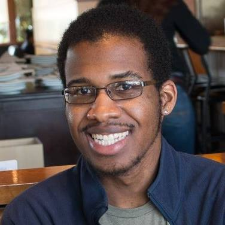

Joshwin Greene is a Product Designer who comes from a software engineering background. He got into product and user experience design when he started to spearhead the design of ScholarDev Apps' mobile bus schedule, called Fresno Transit Free. Besides doing app and general design work, he also co-developed the Android and iOS versions of the application. That application has garnered over 15,000 downloads on Google Play and has had a 4/5 star rating as of 2016. While designing and developing Fresno Transit Free, Joshwin cultivated a strong passion for the creation of great user experiences and design in general.
He graduated from University of California, Irvine with a B.S. in Software Engineering in 2016. He continues to keep up his software engineering skills in order to pursue technological entrepreneurial endeavors on the side.
In his local tech community, he led the Logistics/Food committee for Women Techmakers Fresno’s annual women's tech conference in March 2017. He was also an active member of Fresno City Toastmasters from May 2017 to December 2017.
In order to help him make a name for himself as a Product Designer, he is currently working on a Product-Strategy-Focused UX Case Study on how Pocket could be improved and to explore what's missing when it comes to Save-for-Later apps.
You may follow or connect with him on LinkedIn, Mastodon, Github, and / or Twitter.
Some notable pictures

People’s Choice Winners!
ScholarDev Apps competed in 59DaysofCode in 2013 and was selected as one of the People’s Choice winners.

Android Design Talk
In 2014, he gave an Android Design talk at GDG (Google Developer Group) Fresno’s Devfest at Fresno City College.

Black Graduates Matter
In 2015, he gave a speech at Fresno City College’s black graduation ceremony as a past alumni.

Women Techmakers Conference
On March 19, 2017, Women Techmakers Fresno held its annual women’s tech conference. This is a photo of the majority of the organizers and volunteers.
© Joshwin Greene 2017